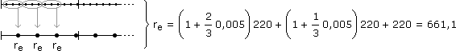
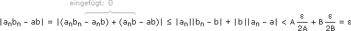

Anhang zu: FOLGEN UND GRENZPROZESSE
MEHRERE RENTEN/ZINSPERIODEN PRO JAHR?
Angenommen wir haben m Zinsperioden pro Jahr, in denen mit dem Faktor 1+im aufgezinst wird (wobei in der Regel nicht im, sondern der nominelle Jahreszinssatz inom = mim angegeben ist). Bei der US-Methode zur Rentenberechnung nimmt man den dazu äquivalenten Aufzinsungsfaktor für eine Rentenperiode und macht diese zur Zinsperiode.
Zu verschiedenen Zinsperioden gehörige Aufzinsungsfaktoren heißen äquivalent, wenn sie in einem Zeitraum, der gemeinsames Vielfaches beider Zinsperioden ist, denselben Kapitalzuwachs bewirken. Die US-Methode ist also exakt, wenn die Zins- in der Rentenperiode enthalten ist. Falls es andersrum ist, haben wir eine Näherung oder wir interpretieren "m Zinsperioden pro Jahr" als Verschlüsselung für obige Vorgehensweise.
Aufgabe: Bestimme den Barwert von 60 nachschüssigen, monatlichen Raten in der Höhe von 220 Euro nach der a) US-Methode, b) Sparkonto-Methode, wenn inom = 2% und der Zinszuschlag vierteljährlich erfolgt.
Zinssatz für die Zinsperiode: i4 =
inom
4
a) Äquivalenten Aufzinsungsfaktor q für Rentenperiode bestimmen:
q3 = 1,005
 q = 1,0051/3
q = 1,0051/3a·(1,0051/3)60 + (–220)
1 – (1,0051/3)60
1 – (1,0051/3)
a = 12552,56 €b) Raten innerhalb einer Zinsperionde zu Ersatzrate re zusammenfassen:

a·1,00520 + (–661,1)
1 – 1,00520
1 – 1,005
a = 12552,58 €BEWEIS:
lim
(an+bn) = n—›∞
lim
an + n—›∞
lim
bnn—›∞
Da an
 a und bn b, finden wir zu jedem ε > 0 einen Index N, sodass für alle n > N gilt:
a und bn b, finden wir zu jedem ε > 0 einen Index N, sodass für alle n > N gilt:
|an – a| < und |bn – b| <
ε
2
ε
2
Damit gilt für alle n > N auch:
|(an + bn) – (a + b)| = |(an – a) + (bn – b)| ≤ |an – a| + |bn – b| < + = ε
ε
2
ε
2
BEWEIS:
lim
(anbn) = n—›∞
lim
an·n—›∞
lim
bnn—›∞
Da an
a und bn b, finden wir obere Schranken an ≤ A, bn ≤ B und zu jedem ε > 0 einen Index N, sodass für alle n > N gilt:
|an – a| < und |bn – b| <
ε
2B
ε
2A
Damit gilt für alle n > N auch:
